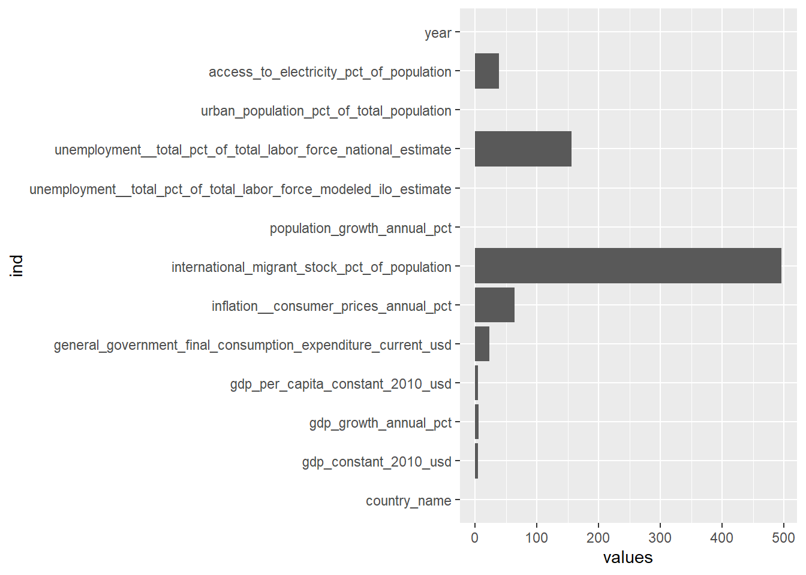

4 Imputations des données par des techniques de Machine learning
# Sélectionner les pays
selected_countries <- c("France", "Angola", "Australia", "Austria", "Bolivia", "Brazil",
"Burkina Faso", "Burundi", "Cabo Verde", "Cambodia", "Cameroon",
"Canada","Chile", "China", "Colombia", "Poland", "Portugal", "Puerto Rico", "Qatar", "Romania", "Russian Federation", "Uganda", "Ukraine", "United Arab Emirates", "United Kingdom",
"United States", "Uruguay", "Uzbekistan", "Vanuatu", "Venezuela, RB",
"Vietnam")
countries_data <- ok %>%
filter (country_name %in% selected_countries)sapply(countries_data, function(x) sum(is.na(x))) %>%
stack() %>%
ggplot(aes(x = ind, y = values)) + geom_col() +
coord_flip() + theme_gray()
## # A tibble: 31 x 2
## # Groups: country_name [31]
## country_name n
## <chr> <int>
## 1 Angola 20
## 2 Australia 20
## 3 Austria 20
## 4 Bolivia 20
## 5 Brazil 20
## 6 Burkina Faso 20
## 7 Burundi 20
## 8 Cabo Verde 20
## 9 Cambodia 20
## 10 Cameroon 20
## # ... with 21 more rows